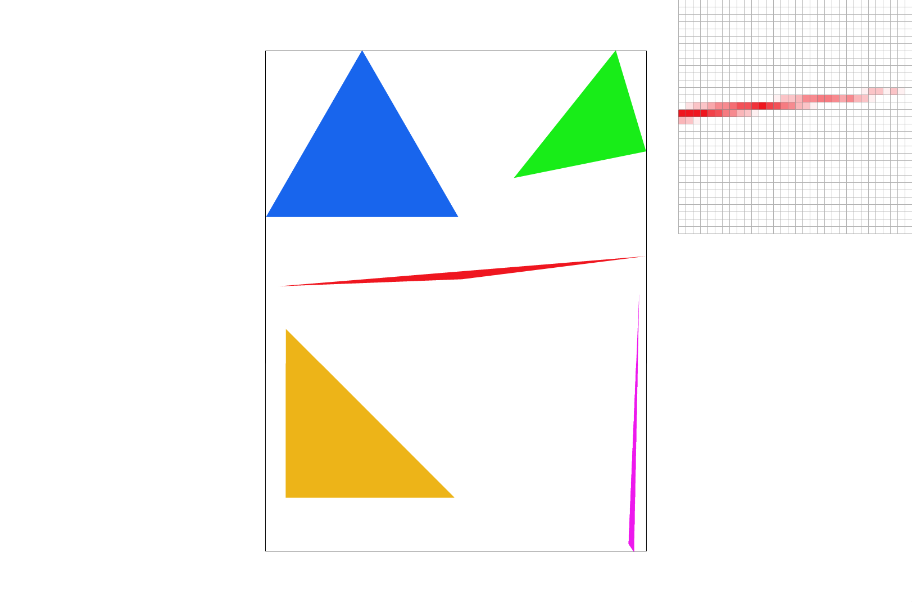
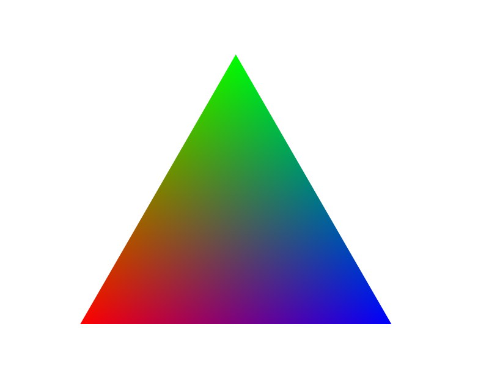
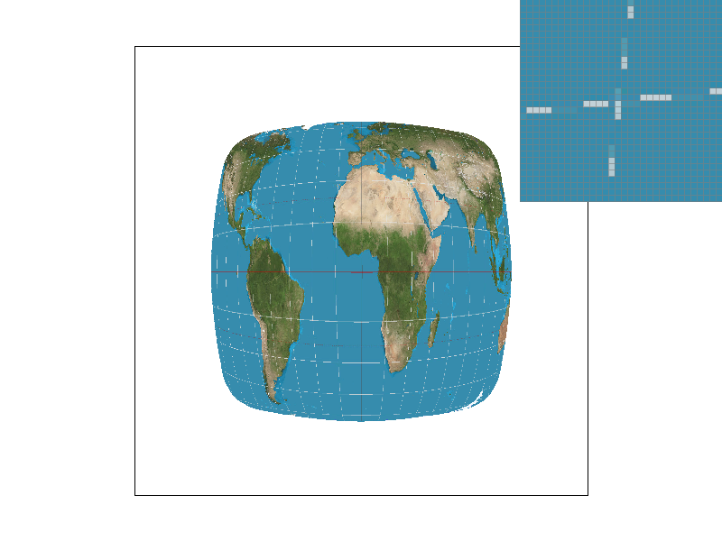
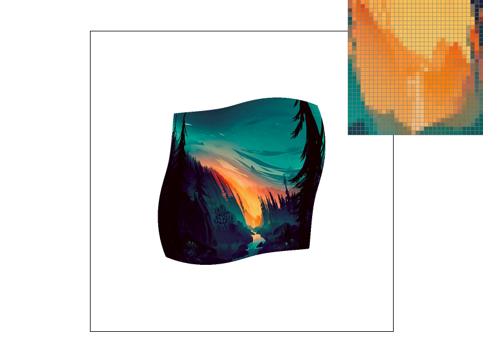
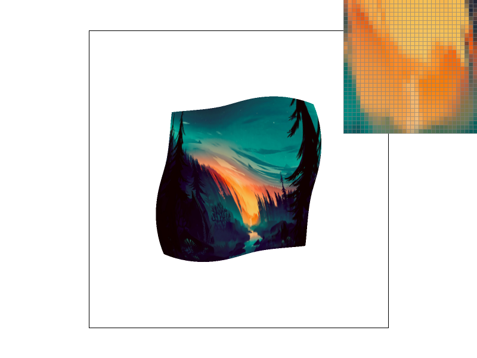

Overview
This project walks through many of the fundamentals of rasterization. I started from implementing the rasterization of basic single-color triangles, and eventually added various other sampling options such as supersampling, interpolated colors using barycentric coordinates, and level sampling with mipmaps for texture mapping. Along the way, I also implemented basic transform operations for homogeneous coordinates, and visualized the differences between bilinear interpolation sampling and nearest neighbor sampling. Getting hands-on and implementing these techniques helped solidify the knowledge introduced in lecture through practical experience, and I feel my understanding has improved significantly.
Section I: Rasterization
Part 1: Rasterizing Single-Color Triangles
We are given that the first task can be completed simply by modifying the rasterize_triangle() function in rasterizer.cpp. I started by computing the bounding box of the triangle: using the minimum of the three x values as the left boundary value, the maximum of the three x values as the right boundary value, and similarly for top and bottom boundary values. Once I had all four boundary values, I simply used a nested for loop to iterate through all x and y pairings, representing all the possible locations of a pixel within the bounding box.
I wrote a separate function, inside(), that would, given an x, y point coordinate and the coordinates for the two endpoints of a triangle edge, return whether the point was inside the edge. For each iteration, I would call the inside function on this iteration's x, y point 3 times, once for each triangle edge. If all three calls evaluated to true, then the point had passed the three-line test, and was thus inside the triangle. Since it was inside the triangle, I could simply call fill_pixel() on this point to color it as part of the triangle.
Since this algorithm literally checks every sample within the bounding box of the triangle, it is trivially no worse than an algorithm that checks each sample within the bounding box of the triangle.
Part 2: Antialiasing by Supersampling
Building on the solution for task 1, I began by altering the sample_buffer data structure, adjusting the size of the underlying Vector so that, instead of just storing the Color objects of (width * height) pixels, it would store Color objects for all the (width * height * sample_rate) samples. I then modified the rasterize_triangle function, adding two more nested loops to iterate through the samples within a pixel. For each sample, I made sure to carefully compute its x, y position within the pixel, so that all the sample_rate samples within the pixel would be distributed evenly.
Now that fill_pixel() was being called for every sample of every pixel, I had to change fill_pixel so that it would fill the now-larger sample_buffer vector correctly, doing some minor adjustments to the indexing value. With the sample_buffer correctly filled with a Color object for every sample, I proceeded to modify the resolve_to_framebuffer() function, where I again added nested loops to iterate through the samples within each pixel. I used a single Color object outside of these nested loops to keep track of the current total in RGB values, adding to it with every sample's Color object using the already-defined Color sum operator. I then made sure to divide each of the R, G, and B values of this total Color object by the sample_rate to correctly calculate the average color values. This would be inserted into the rgb_framebuffer_target just as it had been before, with 3 values per pixel corresponding to RGB.
Supersampling is useful because it enables us to appxorimate applying a box pre-filter antialiasing approach, removing jaggies and other artifacts from the resulting image. By supersampling at the sample_rate for each pixel and then averaging the color values, many jagged edges in the test images have become smoother.
|
|
|
|
|

|
As the sample rate increases, we are able to more accurately capture how much of each polygon actually covers that pixel, and color it accordingly. In the case of the skinny triangle corner shown above, we can see how without supersampling, there are a few pixels that coincidentally are covered by the triangle's edges (and get filled as a result) while other pixels that seemingly should be part of the triangle are not filled because their corresponding pixel happens to not be covered by the edges. This leaves "holes" and "islands" among the pixels representing the triangle corner. By supersampling, the pixels in the "holes" are still given some color, since the increased samples for each pixel results in at least a few of the pixel's samples being covered by the triangle edges, and getting filled in accordingly. Conversely, the pixels in the "islands" go from being entirely filled to only lightly colored — a reflection of the actually small proportion of its samples that are within the triangle's edges.
Part 3: Transforms
My cubeman design, using translations and rotations to have him strike a running pose towards the right. Also changed cubeman's color to blue for fun.
Section II: Sampling
Part 4: Barycentric coordinates
Barycentric coordinates are a coordinate system for triangles that enable us to take values at vertices and obtain smoothly varying values across the surface within the triangle. It uses linear interpolation to compute a weighted sum of the values at all 3 vertices, which becomes the value at some specific point within the triangle. This can be useful for normal vectors, texture coordinates, or color, which is what I have demonstrated in the right image below. The triangle's vertices have color values red, green, and blue, respectively. By inspection, one can notice how the values within the triangle are some combination of those three color values.

|

|
Part 5: "Pixel sampling" for texture mapping
Similar to other triangle rasterization functions with supersampling, texture mapping begins by iterating through every sample within every pixel within the bounding box of the triangle. For every sample point, I calculate the alpha, beta, and gamma weights from the barycentric coordinates formula, and use the three coefficients to calculate the weighted sum of the three 2D texture coordinates for each vertex, resulting in the 2D texture coordinate for the current sample point. There is a minor implementation detail present here, where the texture coordinates are not directly stored in the parameters, rather they are represented by (u, v) pairs, where the values range from 0 to 1 — representative of their proportional distance between 0 to the width of the texture map or 0 to the height of the texture map (for u and v respectively) Thus we must scale up the weighted sum results by the width of the texture map for the u value and the height of the texture map for the v value before passing them into the texture sampling functions.
Implementing the nearest neighbor texture sampling function is relatively straightforward; simply round the u and v values to obtain their corresponding indices into the texture map, a simple call to get_texel(rounded_u, rounded_v) is sufficient for obtaining the Color object containing the texture for this point. Sampling by bilinear interpolation is slightly trickier, since it involves first calculating the indices for the four surrounding texture points, retrieving all four from the texture map, and then applying linear interpolation three times in order to calculate the final Color object of the sample point. It is also really important to check edge-cases, and adjust the selection of the four surrounding neighbors accordingly in those instances where the point is on the very edges of the texture map.
|

|
|
|
|
|
Evidently from the two bottom pictures, with sufficient supersampling, both texture sampling techniques are quite competent in their ability to generate aesthetic texture mapping. However, when looking at the two top images, where no supersampling was used, it is apparent that the bilinear interpolation method is superior; rather than the choppy, separated dashes of the nearest neighbor image, the bilinear sampling demonstrates an attempt to represent the true line structure underneath, and the result is much more faithful to the intended image. Based on these tests, it seems that the largest differences between the two method will occur when supersampling is not used. This is likely because it reduces the advantage that bilinear interpolation presents over nearest neighbor — the ability to integrate information from neighboring texture samples. With a large enough number of samples, nearest neighbor will essentially also have access to this neighboring information, and will perform far more similarly to bilinear interpolation than when supersampling is not used.
Part 6: "Level sampling" with mipmaps for texture mapping
Level sampling involves a few steps. Firstly, a Mipmap storing multiple filtered (low-pass + downsampled) versions of the original texture (each a magnitude of 2 smaller than the previous level) is precomputed. Then for each sample point in the original image, we sample the texture from the texture file in the mipmap whose resolution best approximates the screen sampling rate. To determine the "best" texture resolution, I had to implement the get_level() function, which would use an estimation of the texture footprint for this sample point using the texture coordinates of neighboring sample points. With an understanding of how big pixels in the rendered image are proportional to the coordinates in the texture map, we can determine the closest level of the Mipmap to sample texture points from, or take the two closest levels and interpolate their corresponding texture points.
|
|

|
|
|

|
Supersampling consistently produces excellent antialiasing results, but comes at a signficant tradeoff in both speed and memory usage due to the significant increase in sampling occurrences. Mipmaps (level sampling) require more memory in order to store the various resolution level texture images, but gain a boost in speed (from the precomputation) and antialiasing as a result. Bilinear interpolation is less efficient than nearest neighbor as a sampling technique, but the slower speed results in generally better antialiasing, as the process of interpolating neighboring sample points is very effective for removing jaggies and sharp artifacts.